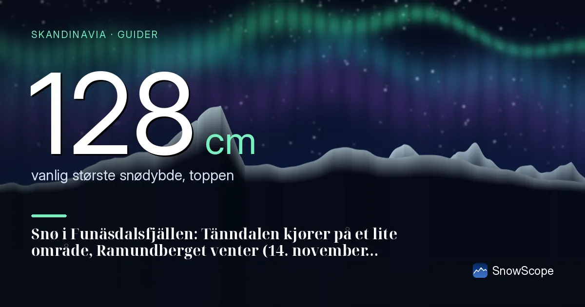
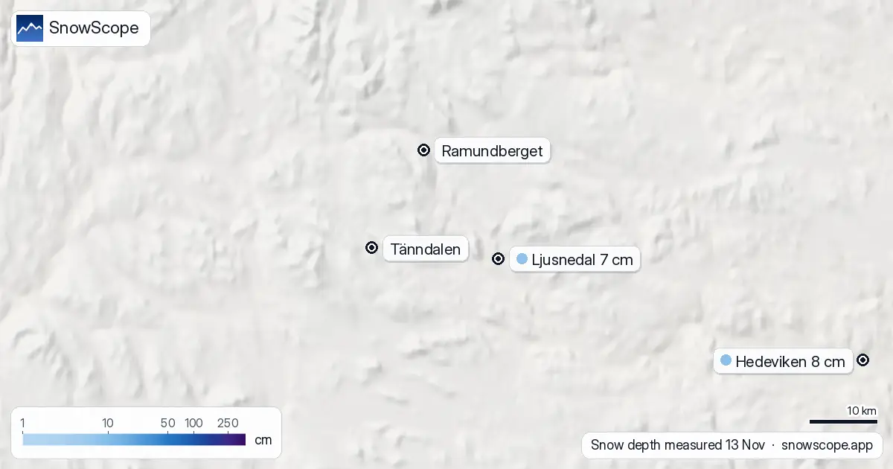

Snø i Funäsdalsfjällen: Tänndalen kjører på et lite område, Ramundberget venter (14. november 2026)
I Funäsdalsfjällen er vinterens første skikjøring allerede i gang, i det små. Tänndalen åpnet 24. oktober, og heisstatusen 13. november sa at det bare finnes et lite område for publikum, mest i helgene. Nærmeste værstasjon, Ljusnedal på 585 m og 19 km fra Tänndalen, målte 7 cm snø den morgenen. Ramundberget, litt lenger nord, meldte 0 cm i bakkene og åpner 19. desember.
Se snøprognosen for Tänndalen direkte i SnowScope-appenSnødybde, puddervarsler og 3D-kartet, gratis.

Stasjonen og bakkene
Ljusnedal hadde ingen snø før 10. november, så 2 cm, 6 cm og 7 cm de neste tre morgenene. Tänndalen har bunnen på 757 m og toppen på 1 020 m, så bakkene ligger høyere enn stasjonen, og det som er kjørbart er et lite område skisenteret har preparert.
Vårt anslag for nysnø de siste sju dagene er rundt 8 cm i Tänndalen og 7 cm i Ramundberget.

Uka som kommer
Vi venter rundt 9 cm på toppen i Tänndalen og 8 cm på toppen i Ramundberget de neste sju dagene. Andre prognoser gir 11 til 22 cm på toppen i Tänndalen og 9 til 25 cm i Ramundberget. Det er ikke ventet regn i disse høydene, og snøgrensen holder seg rundt 360 til 370 m, godt under bygdene. Kalde netter betyr også mer snøproduksjon.
Vanlig snødybde for årstiden
Våre 46 tidligere vintrer gir Tänndalen 29 cm på toppen og 10 cm i bunnen 14. november, og 58 og 27 cm innen 15. desember. Ramundberget er svært likt: 30 cm på toppen og 11 cm i bunnen 14. november. Regionen ligger altså under det normale i dag, men ikke langt unna i bunnen.
Begge skisentrene har en lang hvit sesong på toppen, rundt 224 dager i Tänndalen og 227 i Ramundberget i en middels vinter. Tallene viser også et tap: største snødybde på toppen i Tänndalen i en middels vinter falt fra 134 cm de første 15 vintrene til 115 cm de siste 15.
Åpningsdatoer
Tänndalen: åpent siden premieren 24. oktober på et lite område, publikumskjøring i helgene, flere heiser så snart snøen tillater det. Ramundberget: sesong fra 19. desember 2026 til 11. april 2027, ifølge siden med åpningstider.
Tips til skiløpere
- Tidligsesong på én eller to nedfarter er full av treningsgrupper; i Tänndalen er publikumsområdet åpent i helgene.
- Ta med de gamle skiene: tidlig snødekke over steinene er tynt utenfor den preparerte nedfarten.
- Veien over Flatruet og fjellovergangene kan stenge i vind; sjekk veimeldingene.
Flere kart (eksterne nettsteder)
Referanser og kilder
- SMHI, åpne data: daglig snødybde på svenske værstasjoner www.smhi.se/data/meteorologi/ladda-ner-meteorologiska-observationer
- Tänndalen, offisiell side og heisstatus, lest 2026-11-13 www.tanndalen.com/paa-plats/liftstatus/
- Ramundberget, offisiell side: åpningsdatoer og heisstatus, lest 2026-11-13 www.ramundberget.se/sv/information/oppettider
- Ramundberget, heisstatus (offisiell) www.ramundberget.se/sv/information/liftstatus-vinter
- Lavinprognoser, snøskredvarsler for de svenske fjellene www.lavinprognoser.se/
Om tallene
Målt snø: morgenmålinger 13. november 2026 ved de offisielle værstasjonene i Sverige (SMHI åpne data), Finland (FMI åpne data, CC BY 4.0) og Norge (MET Norways stasjonsrapporter, CC BY 4.0, publisert av Ogimet). Norges nasjonale snøkart seNorge (NVE og MET Norway, NLOD) gir anslagene på et rutenett på 1 km for bakkene. Åpningsdatoer: skisentrenes egne sider, lest 13. november 2026. Løypelengde og antall heiser: kartlegging i OpenSkiMap.
Offisielle snøskredvarsler: Lavinprognoser (Naturvårdsverket)
Siter denne rapporten
For forskning, undervisning eller presse: tallene og diagrammene kan brukes fritt under CC BY 4.0 med denne kildehenvisningen.
SnowScope (2026), Snø i Funäsdalsfjällen: Tänndalen kjører på et lite område, Ramundberget venter (14. november 2026), https://snowscope.app/blog/nb/2026/11/funasdalsfjallen-tanndalen-ramundberget-snow-14-november-2026.html, hentet 2026-11-14
SnowScope (Atlas Labs). (2026, November 14). Snø i Funäsdalsfjällen: Tänndalen kjører på et lite område, Ramundberget venter (14. november 2026). SnowScope snow reports. https://snowscope.app/blog/nb/2026/11/funasdalsfjallen-tanndalen-ramundberget-snow-14-november-2026.html
BibTeX
@misc{snowscope2026funasdalsfjallentanndale,
author = {{SnowScope (Atlas Labs)}},
title = {Snø i Funäsdalsfjällen: Tänndalen kjører på et lite område, Ramundberget venter (14. november 2026)},
year = {2026},
month = nov,
howpublished = {\url{https://snowscope.app/blog/nb/2026/11/funasdalsfjallen-tanndalen-ramundberget-snow-14-november-2026.html}},
note = {Published 2026-11-14 19:59 UTC; accessed 2026-11-14}
}· CC BY 4.0 · Metoder, data og verktøy →
Tänndalen: snø og temperatur etter høyde, i vinter sammenlignet med i fjor (verktøy) →
Følg Tänndalen
Gratis: en melding når nysnø er på vei, og prognosen hver morgen.